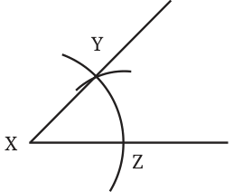
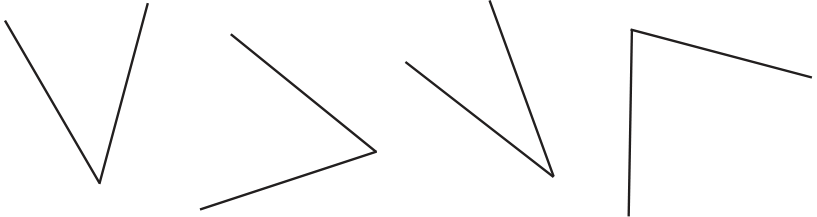
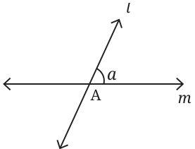
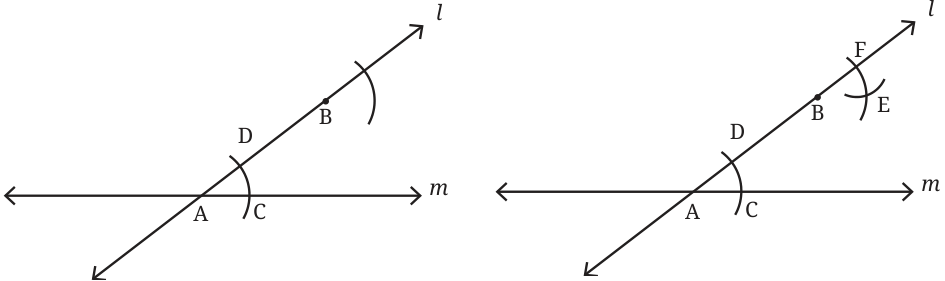
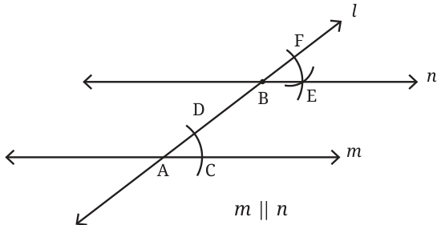

5.


By the SSS congruence condition, \(\triangle ABC\) \(\cong XYZ\). So, \(\angle A = \angle X\).
- Construct at least 4 different angles in different orientations without taking any measurement. Make a copy of all these angles.

- Construct the Fig. 6.6.
This procedure to copy an angle finds an important application in constructing parallel lines using only a ruler and compass.
Construction of a Line Parallel to the Given Line
Recall that in the construction using a ruler and a set square, we constructed equal corresponding angles to get parallel lines. How do we implement this idea using a ruler and a compass? Suppose there is a line m to which we need to draw a parallel line. We construct a line l that intersects m. Line l will serve as a transversal to line m and to the line parallel to Fig. 6.7 m that we are going to construct.

Let us choose a point B on l through which we are going to draw the parallel line. This parallel a line must make the same corresponding angle, B as shown in the figure. This can be done by a
copying the angle between m and l. A
Here is a step-by-step procedure for carrying this out.

Construct arcs of equal Transfer the length CD to radius from A and B the arc from F

Figures \(6.7 - 6.10\) describe a method to construct a line parallel to the given line.